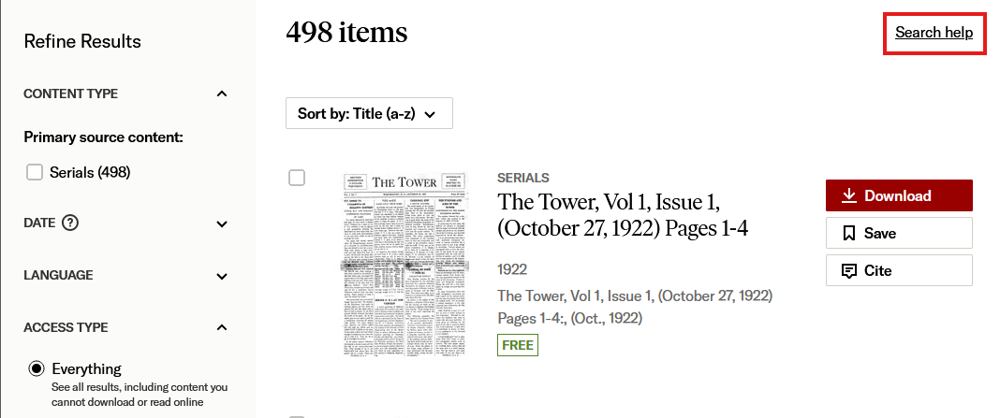

In this assignment usability testing is conducted for the Tower Archive (1922-2018) hosted on JSTOR
| Input | Output |
|---|---|
| Click on a collection section from main page | displays list of items in the collection with details on volume, issue, date, pages, and sidebar with filtering depending on date/source content/language/access. Buttons available to download, save, or cite for each document. |
| Click on document | Information displayed above is visible, pdf view of document, further information about document (description, publisher, work type, resource type, ID, SSID, language, copyright information), buttons to cite/share/save/download. |
| Hover over browse at top of page | Dropdown menu is displayed with options to find content by subject, title, publishers, collections, and images. |
| Apply date filter on collection | displays list of items filtered by date range with details matching main collection page (entry #1). |
There are pro's and con's to usage of this site to learn about the collection and navigating an article database. In terms of usability heuristics: the site is responsive, has loading indicators, is consistent in its visual representation of information, provides a simple UI, and is straightforward. However, the error prevention is minimal and requires the user to have a high degree of familiarity to easily use the system. The only supported language is also English, which limits usage to having a high degree of understanding of English. The application could be used for an assignment such as finding a random document and writing about what information is provided both in the document and by JSTOR about the document. This site would also be a good resource to teach students to find a document given a date to filter by, a subject to search for, or a specific document to find. This website is a great resource for understanding how to use the filters along with search parameters to find information. It would especially excel as a resource for teaching advanced search techniques, such as boolean terms in search queries.
The user found it extremely inconvenient to find articles relating to a particular subject. They expressed interest in the content available and were happy with how it was presented and how the collection was divided by time period, but the moment that the second step started and specific information had to be found they had a really bad time. In fact, they almost entirely failed to find a single article with relevance to the Vietnam War. They more easily found two articles related to World War 2 once they began to employ more complex search queries. Full notes are included in the attached observations document.
I actually thought that the search functionality was a lot more usable without additional context than it turned out to be for the user. Even with experience in using booleans for searching the user struggled quite a lot with the functionality provided by the website. If they were not separately aware of boolean searching, they may not have considered using the advanced search and I do not believe they ever saw the "Search help" link on the page. Based on this, I maintain that my assertion in "weaknesses" that subject filters would be incredibly useful, though that would require a lot of work on behalf of the people managing the collection to create appropriate subject tags. The filtering could also be improved to keep filters between searches, which was something that bothered the user quite a lot. Instead, all filters currently reset when a new search value is entered.
